CSS 选择器
By Hao Ju Zheng
github:
https://github.com/hjzheng
什么是CSS选择器?
CSS语法
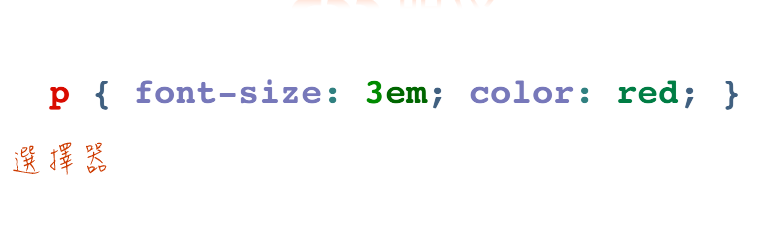
CSS语法
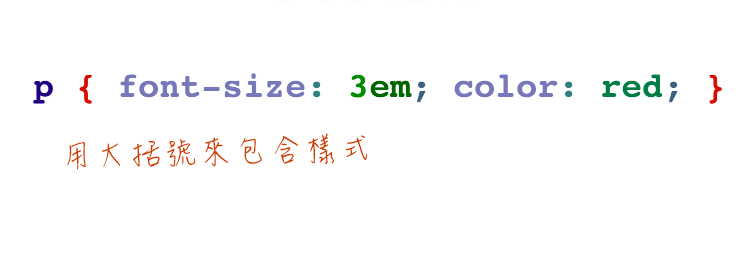
CSS语法
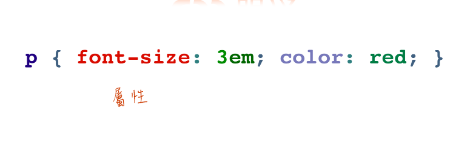
CSS语法
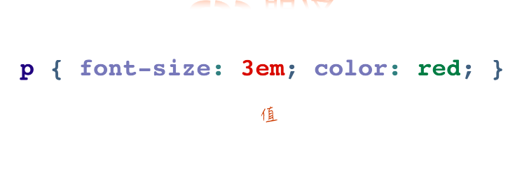
CSS语法
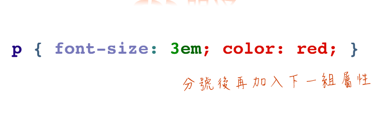
CSS选择器分类
基本选择器
属性选择器
层次选择器
伪类选择器
伪元素选择器
基本选择器
Example:
http://jsfiddle.net/hjzheng/neLh3cda/1/
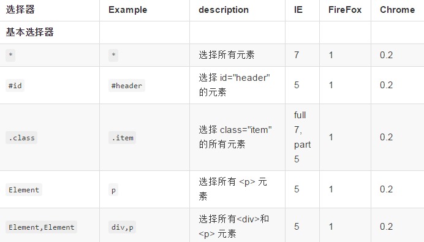
属性选择器
Example:
http://jsfiddle.net/hjzheng/1ysy6rzb/
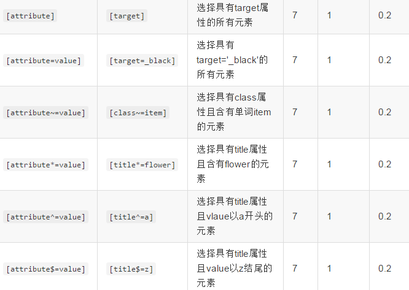
层次选择器
Example:
http://jsfiddle.net/hjzheng/rc4jrcau/
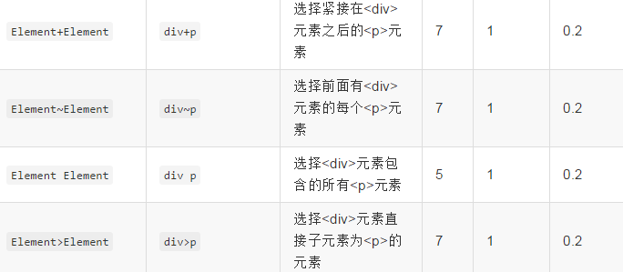
伪类选择器:动态伪类选择器
Example:
http://jsfiddle.net/hjzheng/L7z9e4ae/
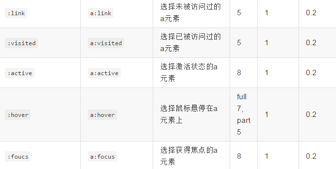
伪类选择器:UI元素伪类状态选择器
Example:
http://jsfiddle.net/hjzheng/9sLcht0m/
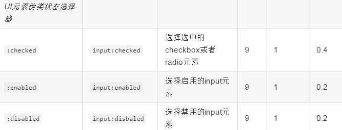
伪类选择器:目标伪类选择器
Example:
http://jsfiddle.net/hjzheng/vdvucuhd/1/
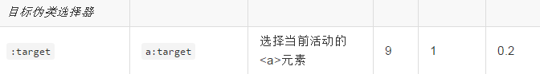
伪类选择器:否定伪类选择器
Example:
http://jsfiddle.net/hjzheng/neLh3cda/1/
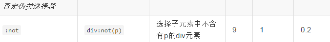
伪类选择器:结构伪类选择器
Example:
http://jsfiddle.net/hjzheng/fnvgbe9n/
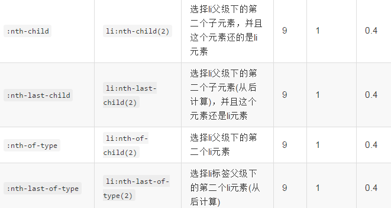
伪类选择器:结构伪类选择器
Example:
http://jsfiddle.net/hjzheng/fnvgbe9n/
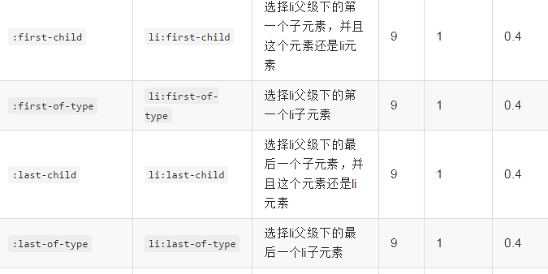
伪元素选择器
Example:
http://jsfiddle.net/hjzheng/Lpjz3fpj/
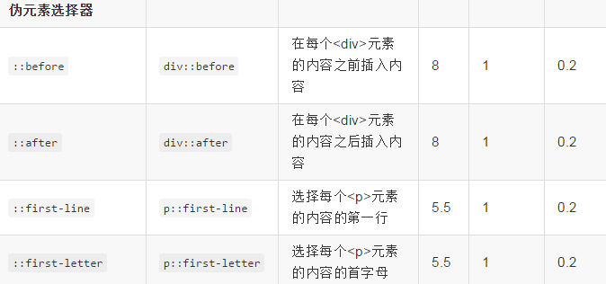
谢谢观赏
2014-12-15
如果你喜欢,请
star
我